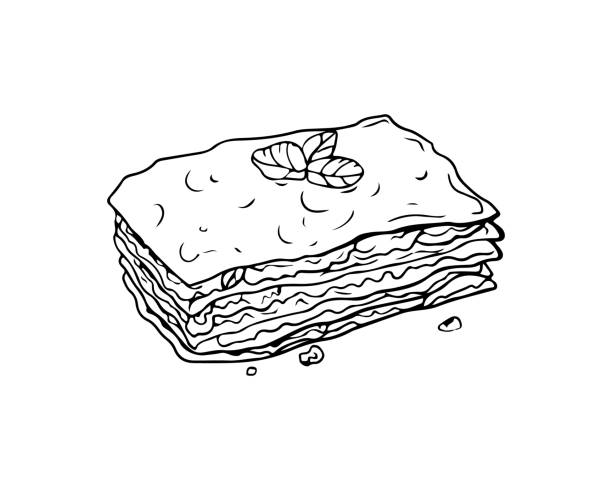

Simon's Lasanga

Description
Italian dish made of stacked layers of lasagne alternating with fillins.
The dish is typically topped with grated cheese and baked in an oven.
The resulting dish is then cut into single-serving square portions.
Ingredients
- 9 Lasagna Noodles uncooked
- 4 Cups of Mozzarella Cheese shredded
- 0.5 Cups of Parmesan Cheese shredded
- 28 Ounce Can of Tomato Sauce
- 1 Pound of Ground Beef
- 1 Onion diced
Directions
- Preheat oven to 350 Degrees F
- Cook lasanga noodles according to package instructions
- Heat olive oil and cook beef with onions
- Spread tomato sauce and beef on the bottom of the cooking dish
- Place lasagna noodles until covered, top with cheese, beef, and tomato sauce. Repeat with a second layer
- Place into oven and bake for 40 minutes then broil until top is browned
- Cool for 15 minutes and serve